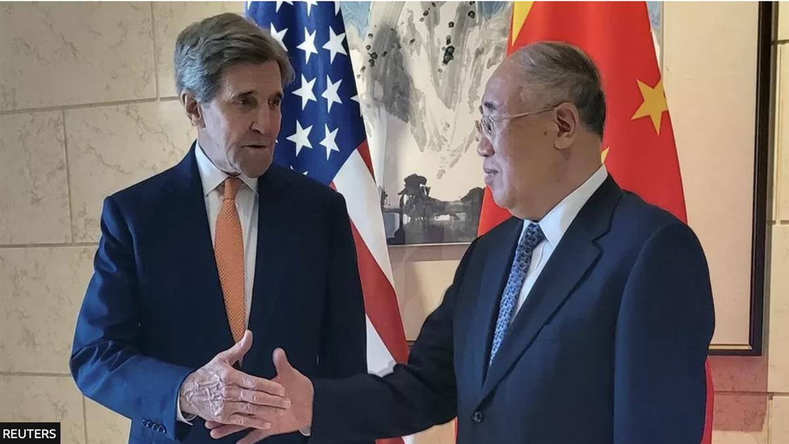

Climate change: US and China take 'small but important steps'
- Published
14 hours ago
SOURCE: BBC
By Matt McGrath
Environment correspondent
The US and China have agreed on measures to tackle climate change but stopped short of committing to end fossil fuels, a joint statement said.
The world's biggest carbon emitters will step up co-operation on methane and support global efforts to triple renewable energy by 2030.
But the document is silent on the use of coal, and the future of fossil energy.
Observers said it was a positive sign ahead of a UN climate summit.
- Extreme autumn heat sets up 2023 for record
- Brazil gripped by 'unbearable' heatwave
- Lightning fires threaten planet-cooling forests
The joint statement comes as the presidents of both countries prepare to meet in California, with climate change representing one of the few areas of potential progress.
For over a year US diplomats have been trying to find a way forward with China after Beijing suspended climate talks after the visit of US Speaker Nancy Pelosi to Taiwan.
Last week those efforts saw US climate envoy John Kerry meet with his Chinese counterpart, Xie Zhenhua, for three days of negotiations that have lead to this agreed position.

The agreement was forged between the two countries' climate envoys, John Kerry and Xie ZhenhuaBoth countries reaffirmed their commitment to a global tripling of renewable energy this decade, as previously agreed at this year's G20 meeting in India.
Both also stated that there would be 'meaningful absolute power sector emission reductions' by 2030.
However, a reduction in the use of coal isn't mentioned in the document and there's no discussion of the ending of fossil fuels, something that the president of the UN climate conference, known as COP28, has said is a key focus for the meeting.
'It's small but important steps on climate change,' said Bernice Lee, a distinguished Fellow at Chatham House and an expert on China.
'But progress on fossil fuels wasn't what I expected to see, as they both have constraints,' she told BBC News.
'My suspicion is that it has proven to be too difficult to find the form of language that works for both. But nonetheless, I think it's good that they have a statement that's focused on the things they agree on, which is, obviously, the renewables and methane.'
That focus on methane is seen as important for the world as the gas is an extremely potent warming chemical in the short term.
When countries agreed the Global Methane Pledge at COP26 in Glasgow, and aimed to reduce emissions of methane by 30% by 2030, China wasn't among the signatories.
The world's second largest economy doesn't currently count methane as a warming gas in its submissions to the UN.
But according to the statement, the two countries will now include all greenhouse gases including methane in their next round of national climate plans.
'This announcement is a major step because China is the world's largest methane emitter and serious actions to curb this gas is essential for slowing global warming in the near-term,' said David Waskow from the World Resources Institute.
The two countries have also said they will jointly host a methane and non-CO2 gas summit at COP28.
The statement will certainly boost the mood of delegates preparing to attend COP28 in Dubai from 30 November.
Amid warnings from scientists that 2023 will be the warmest year on record and with political divisions over Gaza, Ukraine and many other issues, hopes for significant progress at the gathering have been muted.
The fact that even the big divisions between China and the US can be overcome for the sake of the planet is bound to have an impact on others.
'While the two of them can't deliver everything, the US and China coming together to find a way to try and co-operate makes it harder for other countries to hide behind superpower rivalries,' said Bernice Lee.
'It certainly sets a better atmosphere for COP28 than there was before.'
SOURCE: BBC